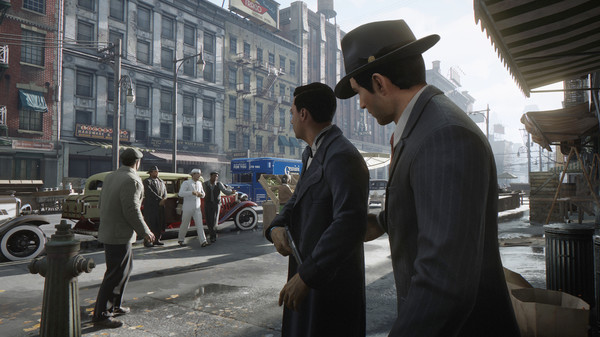

Mafia: Definitive Edition
Az Illusion Softworks 2002-ben megjelent Mafia című játéka nem véletlenül vált nagyon gyorsan kult-klasszikussá. Az eredetileg a 1999-es Driver vetélytársának szánt külső nézetes akció-kalandjáték elkészültére már egy GTA permutációvá vált, nem véletlenül hasonlították az egy évvel korábban, a 2001-ben megjelenő GTA III-hoz. De míg az akkori GTA inkább volt egy gengszter geg, addig a Mafiát mind technikai mind pedig narratíva szinten is jóval komolyabban vette a fejlesztőcsapat. Hatalmas térkép, az akkori technológiai lehetőségekhez képest élő, reszponzív világ, na meg persze az akkori videojátékokhoz képest koncepciózus, jól megírt, átgondolt és emocionálisan is érett narratíva, ami interaktív környezetbe helyezett egy olyan sztorit, amit eddig csak a mozivásznon láthattunk. Végre a játékos is része lehetett egy maffiacsaládnak. Végre cselekvő szintjén érezhette maga körül a maffiózó élet romantikájának légkörét.

Az első rész sikerét az amerikai kiadó 2K Games cseh részlege, a 2K Czech próbálta megismételni a második epizóddal, azonban ez nem sikerült neki. Vito Scaletta kicsit szentimentális sztorija gyakorlatilag ugyanazt a történetmesélő struktúrát követte, mint az első, csak nyolc évvel később. S bár a fanservice működött, nem volt más, mint egy kielégítő klónja az első résznek. Így a trónbitorló élmény még váratott magára. A második részt követően a franchise-t a 2K Games átadta Hangar 13 csapatának, akik 2016-ban elkészítették a harmadik epizódot. A 60-as években játszódó Mafia III ugyan történetében profin megírt és megrendezett volt, viszont játékként repetitív és unalmas, így a trón üres maradt. Azóta eltelt a négy év, a Hangar 13 pedig úgy döntött, ha már a saját ötletükkel megbuktak, az alapoktól felújítják az első részt – Így kért tizenkilencre lapot a 2K Games kedves kis fejlesztőcsapat. Szinte felesleges firtatni, hogy mekkora elvárástömbbel találták szemben magukat.